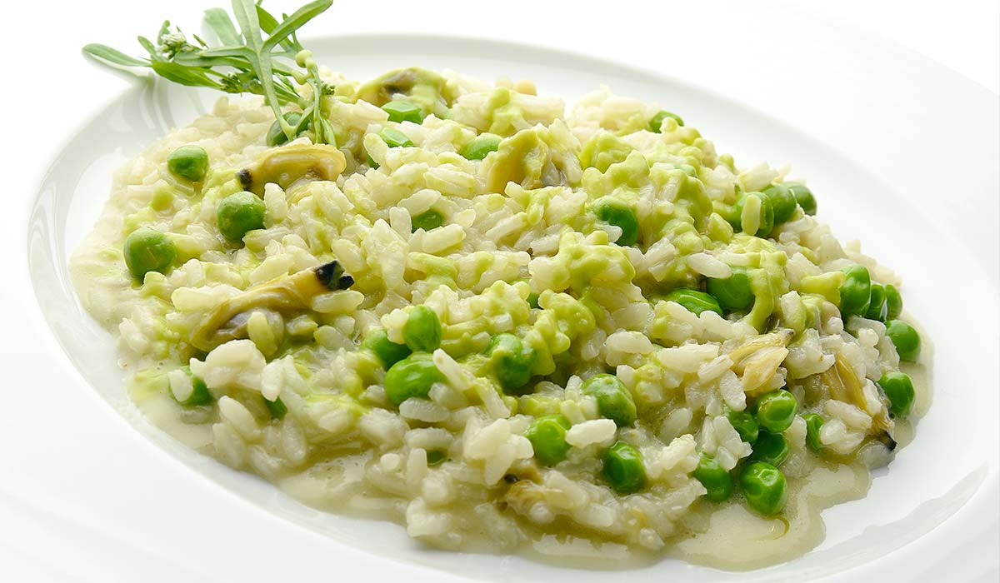
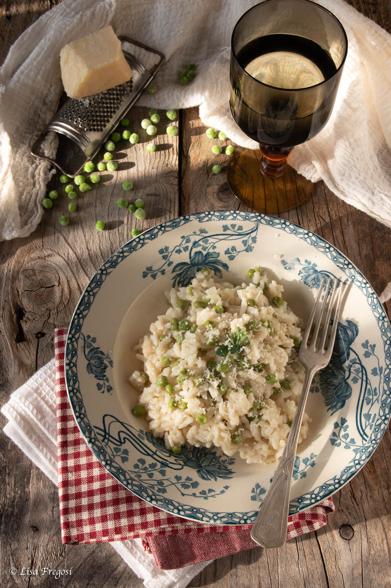

Risi e bisi (Venetian rice and peas)

Description
“Risi e Bisi” simply means Rice and Peas in Venetian dialect. It’s a main dish typical of the Venetian cuisine, especially of the cities of Venice and Vicenza, now spread throughout northern Italy.
This Italian rice and peas recipe is a real comfort food, a mix between a risotto and a soup. It should be soft and creamy, neither too dry nor too runny. Risi e Bisi is a typical spring dish, because of the fresh peas served with their pods. In fact, the authentic Venetian recipe calls for the use of the pods in the preparation of this dish. This is the very feature that makes this plate special!
Risi e Bisi is a complete, rich dish, so much so that you can even think of it as a single dish. In fact for this recipe you must add even pancetta, butter and parmigiano cheese, to make it richer and creamier.
Ingredients:
- 350 g (2 1/3 cups) of “Vialone Nano” rice
- 1 kg (about 2 pounds) of fresh peas with pods
- 1 liter (4 cups) of vegetable broth or chicken broth
- 60 g (about 1/2 stick) of unsulted butter
- 1 small onion
- 1 tablespoon of extra virgin olive oil
- 50 g (2 oz) of pancetta
- 50 g (1/2 cup) of Parmigiano Reggiano or Grana Padano
- 2 tablespoons of chopped parsley
- Fine salt to taste
- Ground black pepper to taste

Steps:
- First, prepare a vegetable or chicken broth, according to your taste. Of course, you can prepare it the day before and keep it in the refrigerator. Then shell the peas, keeping the pods aside. Once you have shelled all the pods, wash them well under running water.
- Boil the pods in lightly salted water for about 45 minutes. Once cooked, blend them with an immersion blender until they are a thick puree. Then pour the puree into a colander to collect the liquid and remove the fibrous part.
Keep the liquid thus collected warm; we’ll use it in the following steps.
- Now chop the onion and cut the pancetta into small pieces. Place the oil, half the butter, onion and pancetta in a large skillet.
- Sauté over medium heat for about 5 minutes. Then add the chopped parsley as well.
- Now add the peas and two ladles of broth. Cook for about 5 minutes.
- Cook slowly for about 15 minutes. While cooking, stir risi and bisi from time to time and, if they get too dry, add more broth. REMEMBER: the consistency is not that of a risotto but more that of a thick soup. When the rice is cooked, turn off the heat and add the other half of the butter.
- Then add the grated Parmigiano cheese and stir. The authentic Venetian recipe for Risi e Bisi is ready! Serve immediately and piping hot.